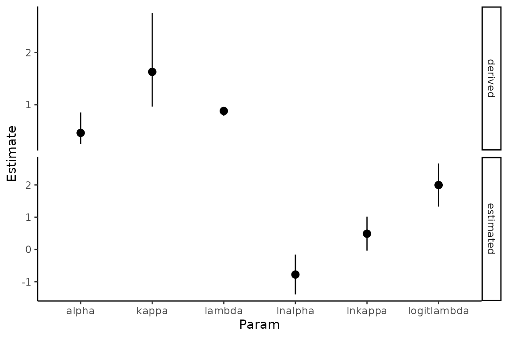
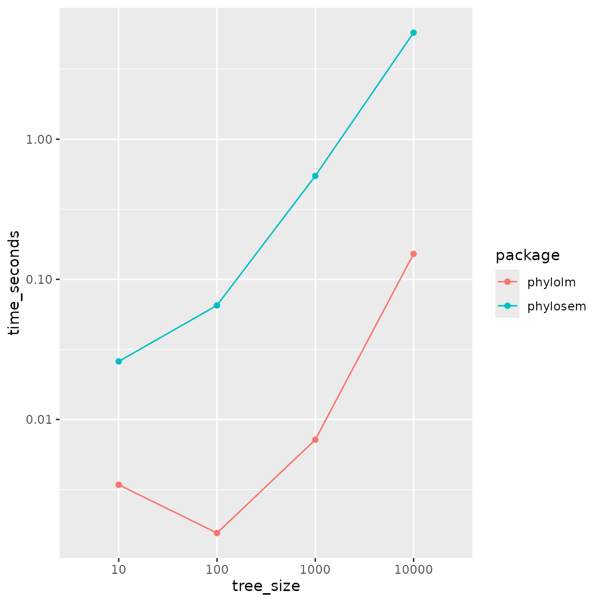

Demonstration of selected features
James T. Thorson
Source:vignettes/demonstration.Rmd
demonstration.Rmdphylosem is an R package for fitting phylogenetic
structural equation models (PSEMs). We here highlight a few features in
particular.
Estimability for multiple covariance transformations
By default, phylosem takes as input a phylogenetic tree
and constructs a covariance under a Brownian motion evolutionary model.
However, it also allows any combination of the following
transformations:
- Ornstein-Uhlenbeck (OU);
- Pagel’s lambda;
- Pagel’s kappa;
This then results in eight possible covariance models formed from including or excluding each transformation. We first show that these transformations are all simultaneously estimable for a reference data set.
# Compare using Pagel's kappa
library(phylopath)
# Run phylosem
model = "
DD -> RS, p1
BM -> LS, p2
BM -> NL, p3
NL -> DD, p4
"
psem = phylosem( sem = model,
data = rhino[,c("BM","NL","DD","RS","LS")],
estimate_ou = TRUE,
estimate_lambda = TRUE,
estimate_kappa = TRUE,
tree = rhino_tree,
control = phylosem_control(
getJointPrecision = TRUE,
quiet = TRUE) )
#
V = psem$sdrep$cov.fixed
Rsub = cov2cor(V)[c('lnalpha','logitlambda','lnkappa'),c('lnalpha','logitlambda','lnkappa')]
knitr::kable(c("minimum_eigenvalue"=min(eigen(psem$sdrep$jointPrecision)$values),
"maximum_eigenvalue"=max(eigen(psem$sdrep$jointPrecision)$values)), digits=3)| x | |
|---|---|
| minimum_eigenvalue | 0.035 |
| maximum_eigenvalue | 43439.097 |
knitr::kable(Rsub, digits=3)| lnalpha | logitlambda | lnkappa | |
|---|---|---|---|
| lnalpha | 1.000 | 0.741 | 0.422 |
| logitlambda | 0.741 | 1.000 | 0.183 |
| lnkappa | 0.422 | 0.183 | 1.000 |
We see that the minimum eigenvalue for the precision matrix (which corresponds to the maximum eigenvalue of the covariance matrix) is greater than zero, such that the precision is invertible and the Hessian matrix is full rank. From this we can see that all parameters are estimable when applying all three transformations. We also see that transformation parameters are not perfectly correlated, although the logit-lambda and ln-alpha parameters have a correlation of approximately 0.75.
We can also extract the standard errors, calculated as the
square-root of the diagonal elements of the covariance matrix. We
extract the estimated values for lnalpha,
logitlambda, and lnkappa and plot plot the 95%
confidence interval as their estimates plus or minus 1.96 times their
standard errors. These values are all unbounded by construction.
However, we also convert these estimates, lower, and upper
confidence-interval bounds to the conventional parameters
alpha, lambda, and kappa, and
plot those as well. These derived quantities are bounded as expected for
Ornstein-Uhlenbeck and Pagel parameters:
library(ggplot2)
# Compile estimates and SEs
pdat = data.frame( "Estimate" = psem$sdrep$par.fixed[c('lnalpha','logitlambda','lnkappa')],
"StdErr" = sqrt(diag(V)[c('lnalpha','logitlambda','lnkappa')]) )
pdat = cbind( pdat, "Param" = rownames(pdat))
#
pdat$lower = pdat$Estimate - 1.96*pdat$StdErr
pdat$upper = pdat$Estimate + 1.96*pdat$StdErr
pdat$type = "estimated"
# Transform from log / logit-space to natural space
pdat2 = pdat
pdat2$Param = c("alpha", "lambda", "kappa")
pdat2['lnalpha',c("Estimate","lower","upper")] = exp(pdat2['lnalpha',c("Estimate","lower","upper")])
pdat2['lnkappa',c("Estimate","lower","upper")] = exp(pdat2['lnkappa',c("Estimate","lower","upper")])
pdat2['logitlambda',c("Estimate","lower","upper")] = plogis(as.numeric(pdat2['logitlambda',c("Estimate","lower","upper")]))
pdat2$type = "derived"
# Plot
ggplot( rbind(pdat,pdat2), aes( x=Param, y = Estimate, ymin = lower, ymax = upper)) +
geom_pointrange(position = position_dodge(width = 0.6)) +
theme_classic() +
facet_grid( rows=vars(type), scales="free" )
These confidence intervals suggest that parameter lnkappa overlaps with 0.0, suggesting that Pagel’s kappa overlaps with 1.0 and could be instead turned off and thereby fixed at that default value.
Scaling of runtime with increased tree size
The package phylolm is expected to have a “linear
runtime”, i.e., a proportional increase in runtime with increasing tree
size. We therefore compare runtime for phylosem and
phylolm using a simulated tree across three orders of
magnitude (10, 100, 1000, or 10000 tips).
# Settings
Ntree_config = c( 1e1, 1e2, 1e3, 1e4 )
Nreplicates = 5
sd_x = 0.3
sd_y = 0.3
b0_x = 1
b0_y = 0
b_xy = 1
# Simulate tree
set.seed(1)
Time_rcz = array(NA, dim=c(Nreplicates,length(Ntree_config),2), dimnames=list(NULL,"tree_size"=Ntree_config,"package"=c("phylolm","phylosem")) )
for( rI in seq_len(Nreplicates) ){
for( cI in seq_along(Ntree_config) ){
# Simulate data
tree = ape::rtree(n=Ntree_config[cI])
x = b0_x + sd_x * phylolm::rTrait(n = 1, phy=tree)
ybar = b0_y + b_xy*x
y_normal = ybar + sd_y * phylolm::rTrait(n = 1, phy=tree)
Data = data.frame(x=x, y=y_normal)[]
# Run phylolm
start_time = Sys.time()
plm_bm = phylolm::phylolm(y ~ 1 + x, data=Data, phy=tree, model="BM" )
Time_rcz[rI,cI,"phylolm"] = Sys.time() - start_time
# Run phylosem
start_time = Sys.time()
psem_bm = phylosem( sem = "x -> y, p",
data = Data,
tree = tree,
control = phylosem_control(
quiet = TRUE,
newton_loops = 0,
getsd = FALSE) )
Time_rcz[rI,cI,"phylosem"] = Sys.time() - start_time
}}
# Format
df = apply( Time_rcz, MARGIN=2:3, FUN=mean )
df = cbind( expand.grid(dimnames(df)), "time_seconds"=as.vector(df) )
# Plot
library(ggplot2)
ggplot(data=df, aes(x=tree_size, y=time_seconds, group=package, color=package)) +
geom_line() +
geom_point() + scale_y_log10()
Results show that both packages have approximately linear runtime,
but that phylolm is approximately 10-100 times faster for
any given tree size.